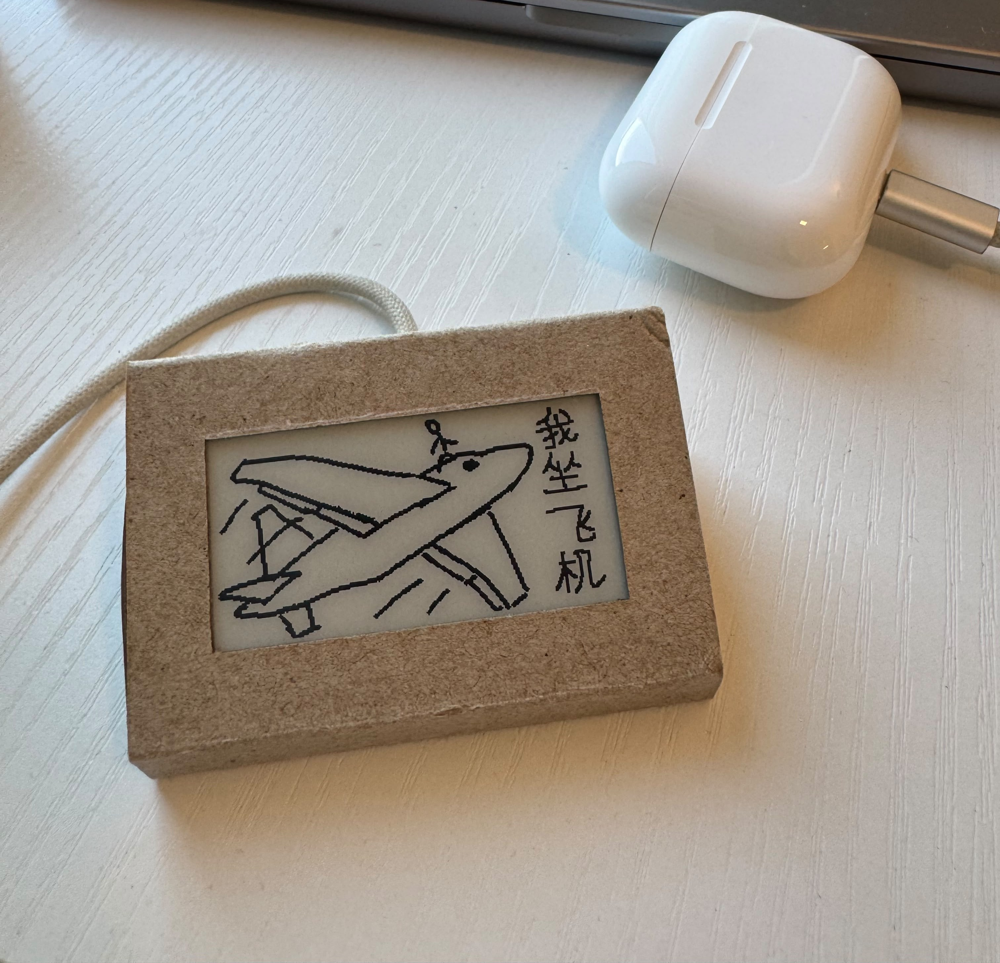
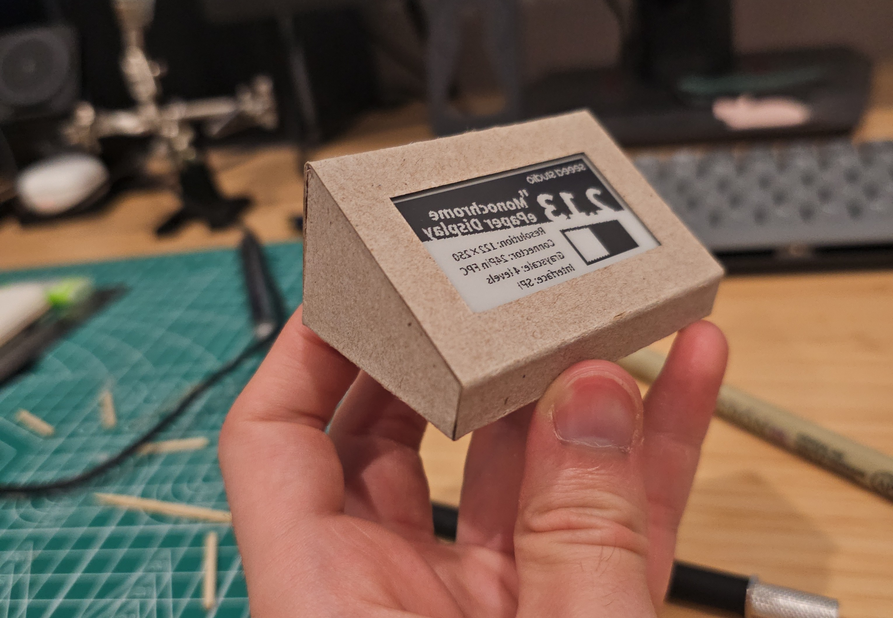
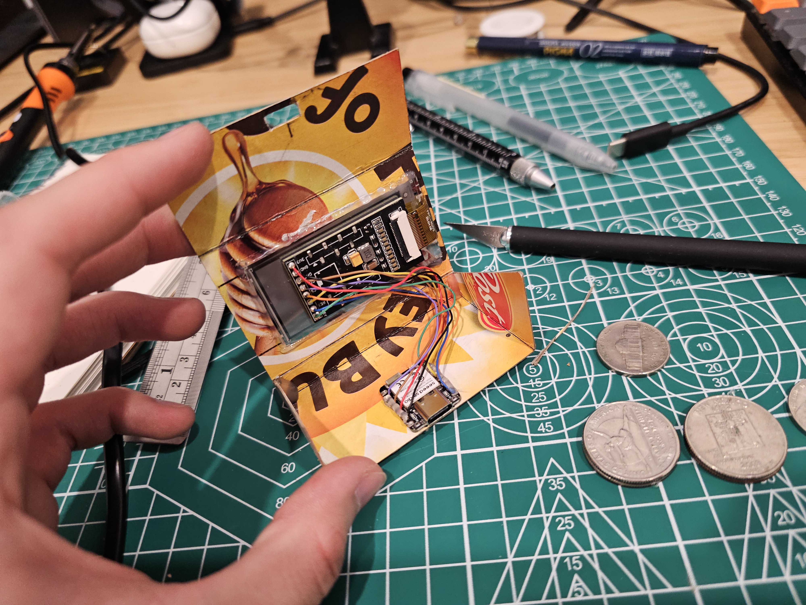
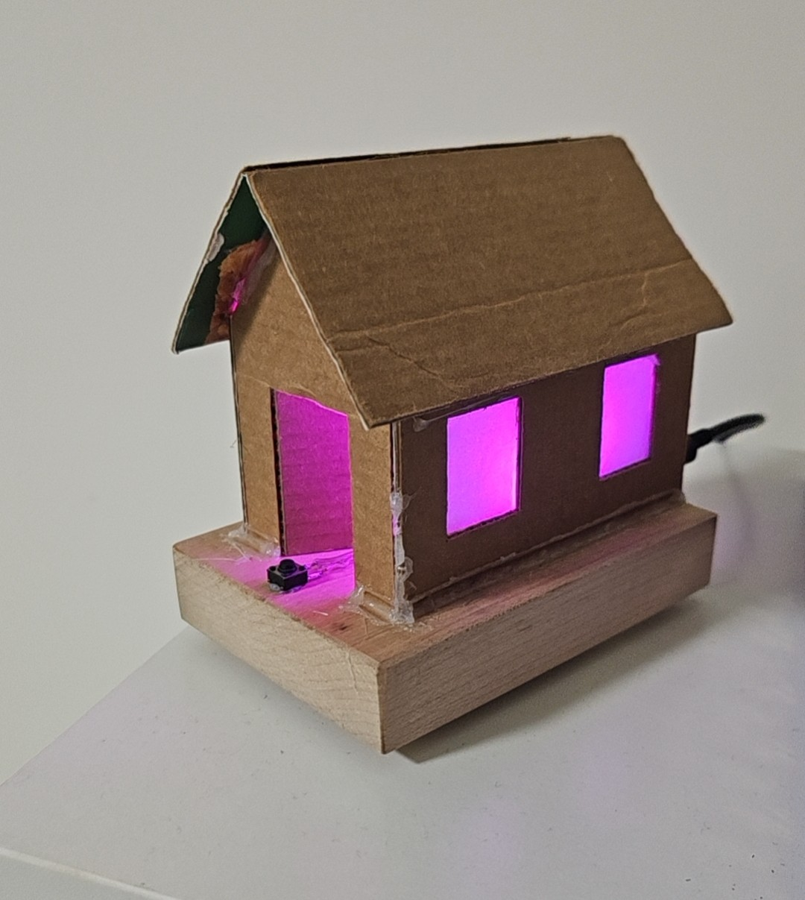
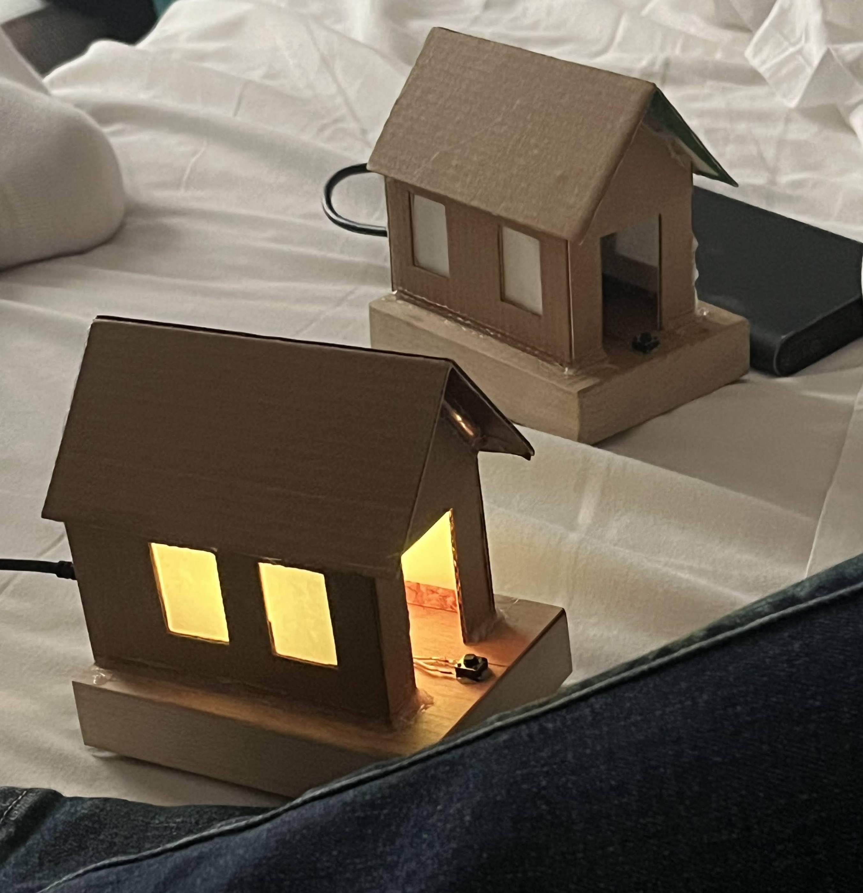
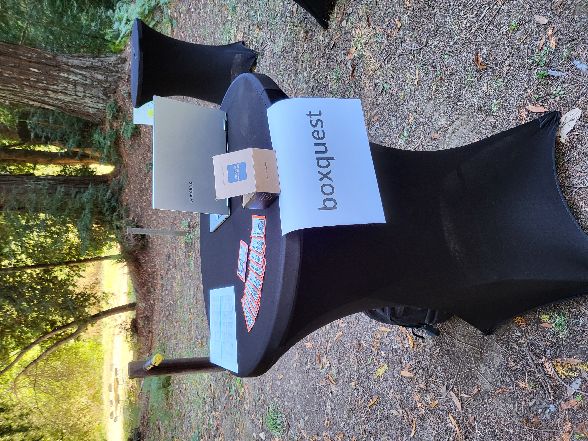
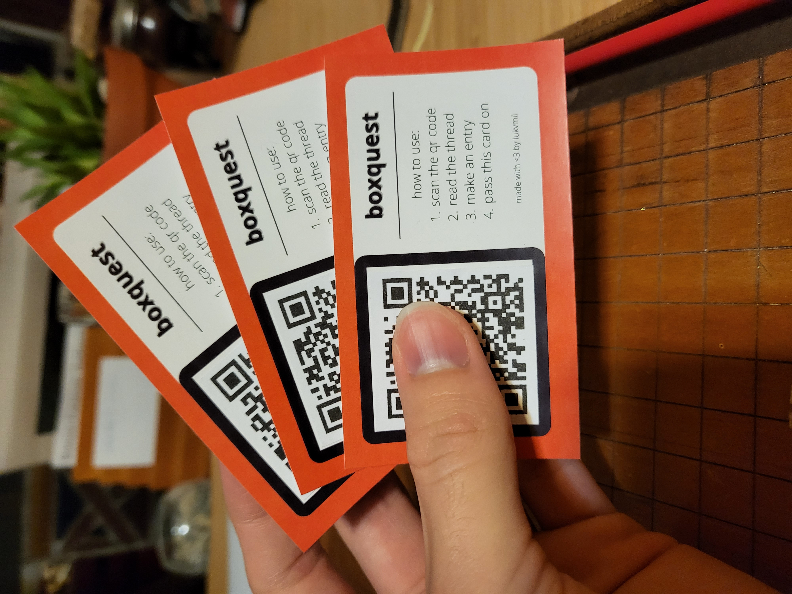

Project
项目

Led development of the KOI-net protocol & framework, enabling organizations to self-infrastructure knowledge processing capabilities, gain autonomy over their data, and govern data usage.
Designed a common interoperable protocol, allowing organizations to share and integrate knowledge.
Built modular KOI applications, which pull data from siloed platforms (Slack, Google Drive, GitHub) to enable cross-platform search, inter-laboratory scientific collaboration, and data archiving.
Designed and built Telescope, a tool which assists ethnographers in curating datasets by automating consent approval in online communities and syncing collected messages with researchers’ lab notebooks.
Telescope has been deployed in 7 communities and collected over 800 messages in a participatory process where individuals have control over how their data is used and can view a live feed of their collected data.
Designed and implemented a KOI-powered tool for the Metagov community Slack, allowing members to ask questions, vote on the responses, and archive the thread for future reference. Each thread can be tagged with a “topic group,” adding metadata to the archive, and inviting members of that group to participate in the conversation. Use of this tool helped to increase community engagement.

A tabletop message box that displays drawings sent by your partner on a wireless, passive e-ink display.



A set of paired “houses,” each ambiently shows when your partner is awake or asleep, displays a countdown until the date of your next reunion, and has a button that can relay a haptic buzz to the other house.

Created a networking app allowing users to exchange personal info by scanning a QR code and save notes about the person they connected with. Each connection became part of a global graph visualization. New users were onboarded by existing users, organically growing the app to over 150 users at a conference.
Worked with authors of the EIP-4824 DAO interface standard to implement the specification for 8 blockchains as a robust REST API service using an nginx, Gunicorn, and Flask back end and a custom Bootstrap + JS front end
Used AWS DynamoDB and IPFS to provide scalable and decentralized storage of DAO metadata.

BoxQuest is an experimental social platform and interface for the physical world focused on real interaction, social connection, and a sense of place.
Users interact with physical objects (currently cards) that are tagged with a unique QR code. Scanning the code lets users access a thread associated with the object and add their own entry to it. Each entry is composed of an image, geotagged location, and message. The thread shows the path that the object took through time and space to get to its current holder. By only allowing the current holder to post in the thread, the object passes from person to person, each adding their own entry marking its spot in space and time.
On top of this system, each thread also comes with a goal or topic, called a “quest” attached to it. The first person to use the tag decides its quest and writes instructions on how to pursue it. Possible quests could range from “take a picture of your pet” or “pick up litter” to “send this card around the world and bring it back to me” or “do a good deed and pay it forward”.
This concept was inspired by Karl Schroeder’s “The Suicide of Our Troubles” in which a mixed reality game begins to catalogue and incorporate real world objects and places. The system eventually gives rise to AI-powered characters who seek “suicide” by resolving the environmental issues they represent.
I had originally imagined an approach similar to this story, in which gamification and tokenomics could incentivize a decentralized network of users to perform physical actions on behalf of other users or algorithms. However as I started to build out the prototype I realized how reductive this model was, which could easily lead to another exploitative gig work platform. If instead BoxQuest could socially organize people by building interest and connections to the physical world, it could be an effective force for good!
BoxQuest is a genuinely new spatial architecture for social media, and for once “space” actually means space. I found that social interaction itself can be powerful and build real networks. The physical exchange of tagged items, sense of communal investment in a quest, and positive engagement it encourages aren’t present on any other platform. Furthermore, this approach also naturally facilitates organic growth of the platform. Each time a tag is passed on, a new user is introduced to BoxQuest and instructed how to use it.
I’ve been dreaming up this concept for a long time and am really excited to share this with everyone at DWeb Camp. I can’t wait to see what quests people come up with and where the tags will travel once camp ends!

Developed an implementation of Modular Politics, a system for modeling a wide range of governance structures.
Created a flexible user organization and voting system, 20 nestable modules for governing in-game actions, and support for developers to write their own modules in Lua for the open-source sandbox game, Minetest.
Prototyped modular software model for creating and maintaining complex multi-step contract systems. Coauthored “Building Net-Native Agreement Systems,” published in the MIT Computational Law Report.